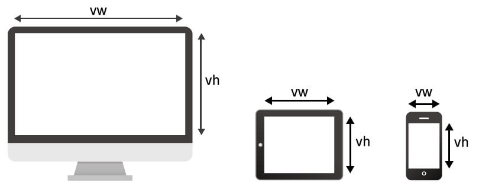
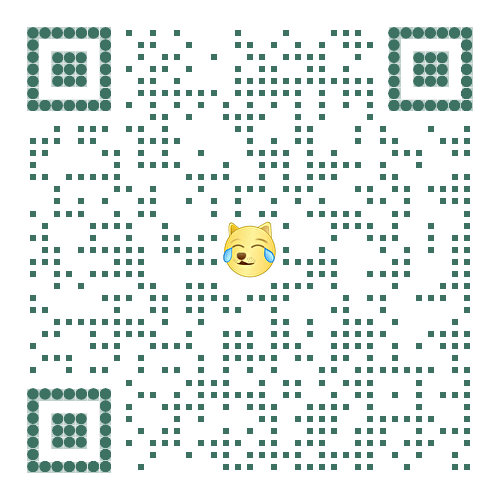
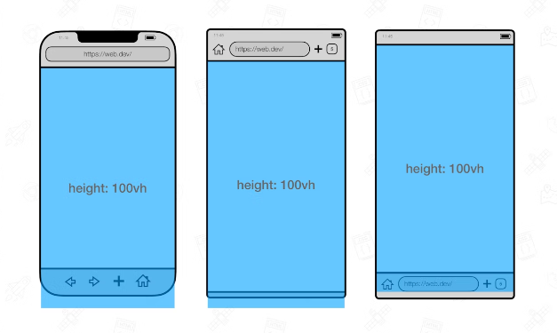
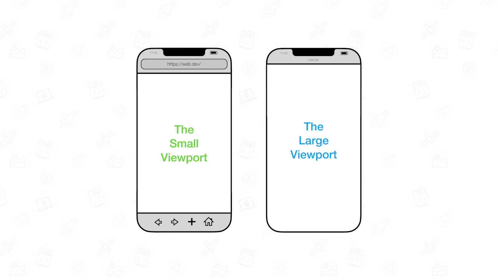
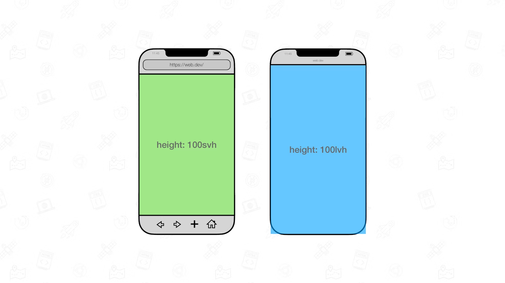
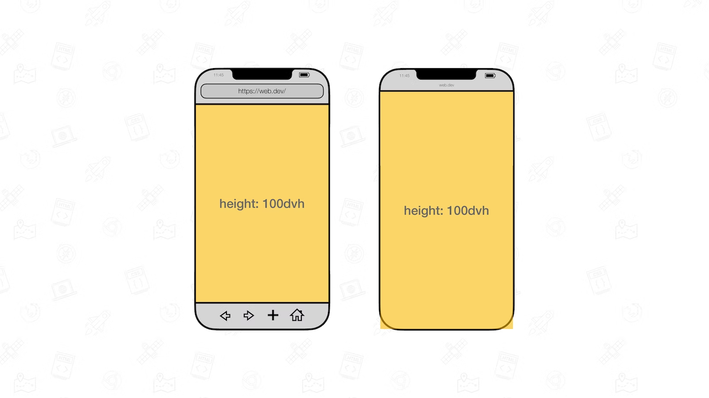
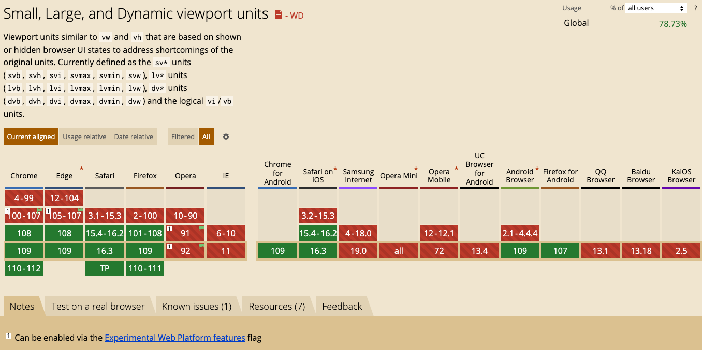
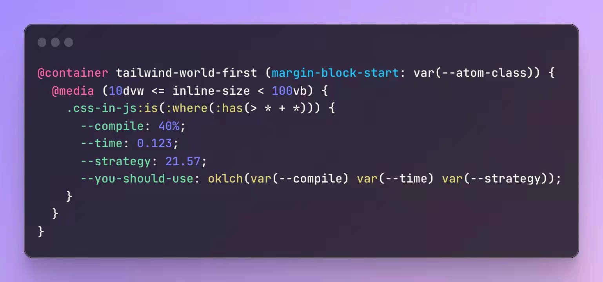

大部分同学都知道，在 CSS 世界中，有 vw、vh、vmax、vmin 这几个与视口 Viewport 相关的单位。
正常而言：
- 1vw 等于1/100的视口宽度 （Viewport Width）
- 1vh 等于1/100的视口高度 （Viewport Height）
- vmin — vmin 的值是当前 vw 和 vh 中较小的值
- vmax — vw 和 vh 中较大的值

vh 在移动端存在重大问题！
但是，在移动端，情况就不太一样了。100vh 不总是等于一屏幕的高度。有的时候，100vh 高度会出现滚动条。
可以使用移动端 Chrome 浏览器扫描下面的二维码查看实际 100vh 在移动端的表现：

根因在于：
- 很多浏览器，在计算 100vh 的高度的时候，会把地址栏等相关控件的高度计算在内2
- 同时，很多时候，由于会弹出软键盘等操作，在弹出的过程中，100vh 的计算值并不会实时发生变化！
这也就变相导致了许多基于 100vh 想实现的效果无形中会产生很多问题。

图片来源于：The large, small, and dynamic viewport units
新视口相关单位之 lvh、svh、dvh
为了解决上述的问题，规范新推出了三类单位，分别是：
- The large viewport units（大视口单位）：lvw,lvh, lvi, lvb, lvmin, and lvmax
- The small viewport units（小视口单位）：svw, svh, svi, svb, svmin, and svmax
- The dynamic viewport units（动态视口单位）：dvw, dvh, dvi, dvb, dvmin, and dvmax
别看看上去很多，其实很好记忆，vw/vw/vmax/vmin 的前缀是 v，而：
- 大视口单位的前缀是 lv，意为 large viewport
- 小视口单位的前缀是 sv，意为 small viewport
- 动态视口单位的前缀是 dv，意为 dynamic viewport
这里我们着重关注 lvh、svh、dvh。它们三者与 vw 有什么异同呢？
先来看大视口与小视口，规范对它们的定义是：
- Large Viewport: The viewport sized assuming any UA interfaces that are dynamically expanded and retracted to be retracted.
- Small Viewport: The viewport sized assuming any UA interfaces that are dynamically expanded and retracted to be expanded.
翻译一下：
- 大视口（Large Viewport）：视口大小假设任何动态扩展和缩回的 UA 界面都没有展开
- 小视口（Small Viewport）：视口大小假设任何动态扩展和缩回的 UA 界面都展开了

因此，对应到高度之上，其状态大致如下：

理解了大视口与小视口之后，再理解动态视口就轻松了些。
简单而言，动态视口的意思是：
- 动态工具栏展开时，动态视口等于小视口的大小
- 当动态工具栏被缩回时，动态视口等于大视口的大小
因此，也就能得到下面这张图：

其中，dvh、dvw、dvmax、dvmin 对标 vh、vw、vmax、vmin 比较好理解。
剩下，dvi 和 dvb 解释一下。其实，在之前也有 vi 和 vb 两个单位：
- vi：vi 代表 Viewport Inline，代表文档的内联方向。在水平书写方向上，这对应于视口的宽度，而在垂直书写方向上，这表示视口的高度。记住 inline 方向的简单方法是记住它与文本的方向相同。
- vb：vb 代表 Viewport block，代表文档的块方向。这与 vi 水平书写方向相反，这将对应于视口高度，而在垂直文档中，这将表示视口的宽度。
因此，vi 和 vb 属于两个逻辑单位。关于 CSS 中的方位与顺序，逻辑单位相关的内容，你可以看看我的这篇文章：#127
理解了 vi 与 vb，dvi 与 dvb 也就很好理解了，它们分别表示动态视口下的 Viewport Inline 与 Viewport block。同理去理解大视口、小视口下的 lvi、lvb、dvi、dvb。
dvh、svh、lvh 它们的兼容性（2023-01-25）
截止到书写本文的时间，它们已经被 Chrome 108+ 支持，而 firefox、Safari 在更早的阶段，就已经开始支持这些新单位了。
看看 CanIUse：

因此，在不久的将来，全面使用 dvh 替代 vh，能有效的减少非常多因为 vh 在移动端的表现而引起的问题。
总结一下
简单再总结一下，本文通过 vh 在移动存在的问题入手，引出了规范新增的三大类新的和视口相关的单位。分别是：
- 大视口（Large Viewport）
- 小视口（Small Viewport）
- 动态视口（dynamic viewport）
它们的出现，极大的弥补了之前 vh/vw 等视口单位存在的问题。CSS 的更新迭代一直在快速持续，很多内容还是有必要不断了解学习，在不久的将来就能很快应用在业务中。
此外，除了动态视口外，其实 CSS 还更新了与容器大小相关的相对单位 -- 譬如 cqw 和 cqh。
- cqw：表示容器查询宽度（Container Query Width）占比。1cqw 等于容器宽度的 1%。假设容器宽度是 1000px，则此时1cqw 对应的计算值就是 10px
- cqh： 表示容器查询高度（Container Query Height）占比。1cqh 等于容器高度的 1%
容器查询：它给予了 CSS，在不改变浏览器视口宽度的前提下，只是根据容器的宽度变化，对布局做成调整的能力。
也就是说，CSS 除了在视口这条路之外，也逐渐在扩充探索以及完善与容器大小变化相关的能力。
假期在群里看到了这样一张很有意思的图：

可以预见，未来 CSS 将朝着越来越复杂、功能越来越强大继续发展，诸多新特性层出不穷。可能不再是很多人之前眼中的比较简单的一门语言。
不知是好是坏，且学且珍惜吧。